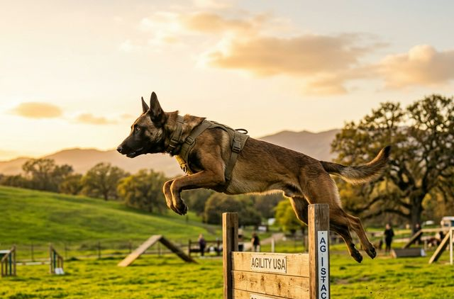
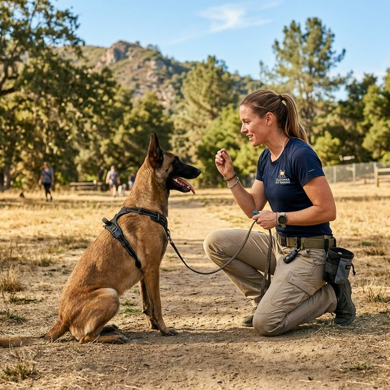
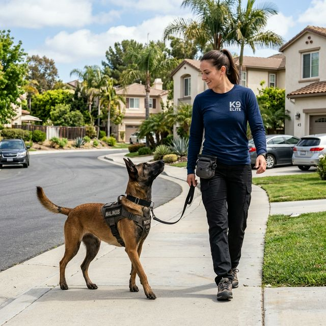
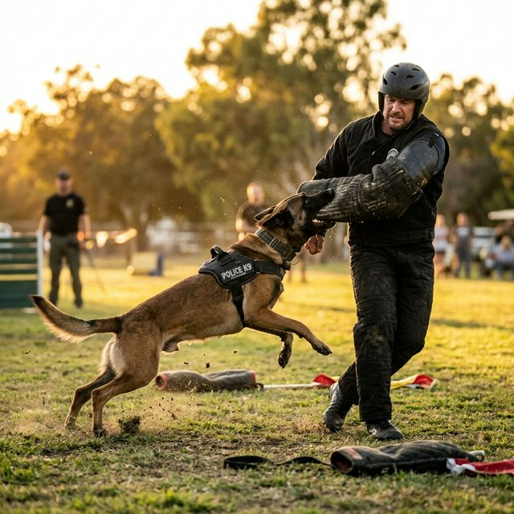
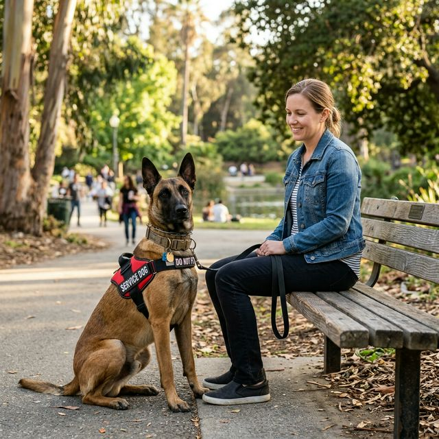
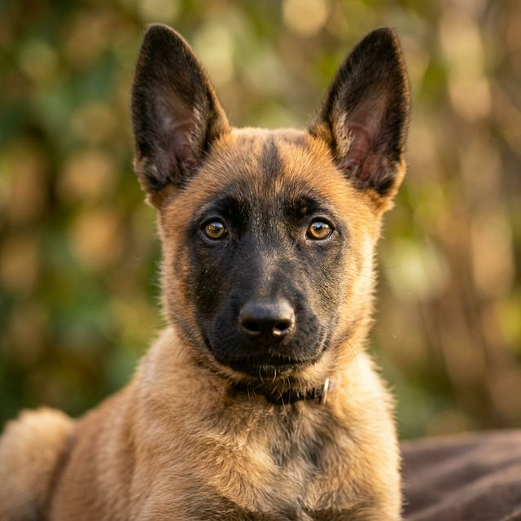
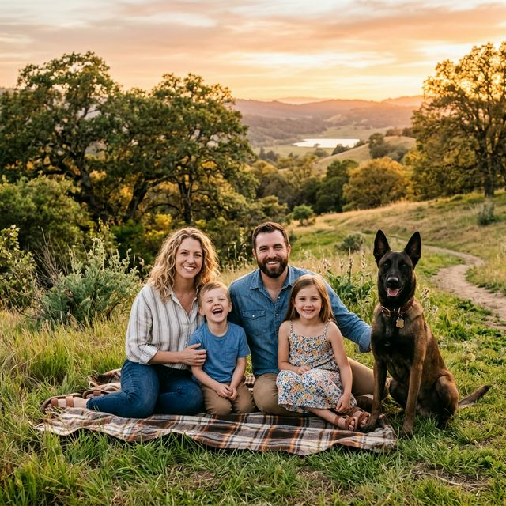
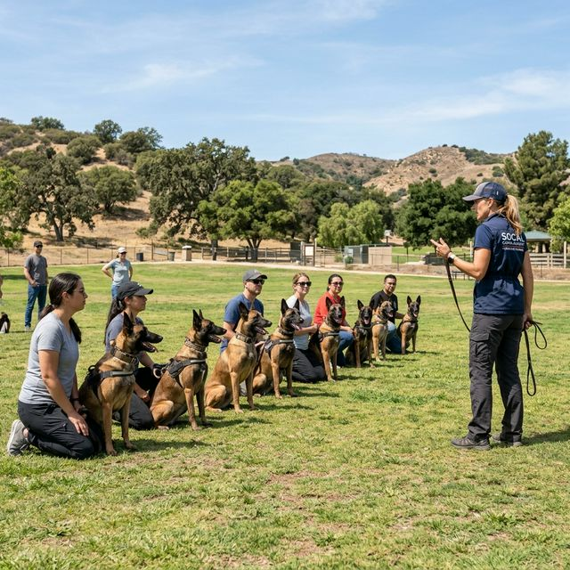

We work with high-drive dogs every day — and we know the Malinois better than anyone. Whether you have a young pup or an adult dog with challenging behavior, we build real results through proven, humane methods.

At Malinois Training, we've dedicated our careers to understanding the unique intelligence, drive, and temperament of working breeds — especially the Belgian Malinois. We know this breed is not a "one-size-fits-all" dog, and our programs reflect that.
Based in California, we work with Malinois owners across the state — from San Diego to Sacramento. Whether you're raising a family companion, building a service dog, or preparing a dog for protection work, our structured, relationship-based approach gets real results.
From first-time Malinois owners to handlers preparing a dog for serious work, we have a program designed for your specific situation.

Build a solid foundation of commands, leash manners, and impulse control. This program is ideal for Malinois owners who want a dog they can actually live with — and enjoy every day.

Advanced development for sport (IPO/PSA), personal protection, and law enforcement preparation. We develop natural drives through structured, controlled training.
Inquire
We help California residents train their Malinois for mobility assistance, psychiatric support, and other service roles — from evaluation through public access.
Inquire
Start your Malinois puppy off right. Our early socialization and foundational training program sets the groundwork for a confident, well-adjusted adult dog.
Inquire
Our full-immersion residential program delivers lasting results in weeks. Your dog stays with us and receives intensive, consistent daily training.
Inquire
Dealing with aggression, reactivity, or anxiety? We address complex behavioral issues in high-drive breeds with clear, consistent, humane methods.
InquireThe Belgian Malinois is not a typical family dog. They are high-energy, highly intelligent, and deeply sensitive to how they are handled. Putting a Malinois through a generic "obedience class" often does more harm than good.
Our trainers understand the breed at a deep level — how they think, what motivates them, and what they need to thrive. That's why our results speak for themselves.
We use marker-based, relationship-driven training — the same techniques used by elite working dog handlers worldwide.
Malinois need mental stimulation as much as physical exercise. Our programs address both to prevent behavioral problems before they start.
We don't just train the dog — we train you too. You'll leave every session knowing exactly what to do at home to maintain progress.
We make it easy to get started. Here's exactly what to expect when you reach out to us.
We start with a free phone or video call to learn about your dog, your goals, and which program is the right fit for your situation.
Based on your dog's age, temperament, and training history, we build a personalized program with clear milestones and realistic timelines.
Whether it's private sessions, group work, or board-and-train, your dog gets consistent, professional training from day one.
We walk you through everything your dog has learned and provide ongoing support so the progress continues long after training ends.
The Malinois is one of the most capable dog breeds in the world — used by military, law enforcement, and search-and-rescue teams across California and beyond. But that same capability comes with serious responsibility.
With the right training and structure, a Malinois can be a devoted, incredibly rewarding companion. Without it, their energy and intelligence can turn into frustrating — and potentially dangerous — behavior. Our job is to help you bridge that gap.
Talk to a TrainerDon't just take our word for it. Here's what our clients across California have to say about working with us.
"I honestly didn't know what to do with my Malinois anymore. He was reactive, destructive, and I was losing hope. After the board-and-train program, he's a completely different dog. I can actually take him to the farmer's market now."
"We needed our Malinois trained as a psychiatric service dog. The team was knowledgeable, patient, and walked us through every part of the process. We're so grateful for everything they've done for our family."
"I was skeptical about paying for specialized training, but this team proved their value in the very first session. My Mal was pulling me down the street before — now she walks at heel and listens reliably. Worth every penny."
"I got my Malinois as a puppy and started training with this team from day one. That decision made all the difference. He's now two years old, fully obedience trained, and the best dog I've ever owned."
Here are the questions we get asked most often by California dog owners considering training for their Malinois.
The Malinois is an incredibly capable breed, but they are not typically recommended for first-time dog owners without proper support. They require consistent training, structured exercise, and mental stimulation every single day. If you're committed and willing to invest in professional guidance, it's absolutely possible — and we're here to help make it work.
It depends on the program and your dog's starting point. Basic obedience programs typically run 4–8 weeks with consistent practice at home. Board-and-train programs usually run 3–6 weeks. Service dog or protection training is a longer process — often 6 months or more. We'll give you a realistic timeline after your free consultation.
Yes. Aggression and reactivity are among the most common reasons people contact us. We assess every dog individually before committing to a program, and we're honest about what's achievable. Many dogs with aggression issues can be significantly improved with the right approach — but we'll be upfront with you about expectations from the start.
Absolutely. While the Malinois is our specialty, we also work with German Shepherds, Dutch Shepherds, Rottweilers, Dobermans, and other high-drive working breeds. Our training principles apply across all working breeds, and we tailor every approach to the individual dog.
We are based in Southern California and serve clients across the state — including Los Angeles, San Diego, San Francisco, Sacramento, Fresno, and surrounding areas. We also offer virtual consultations for clients outside our in-person service area. Contact us and we'll find a way to make it work.
We don't just hand your dog back and wave goodbye. Every program includes a handoff session where we walk you through everything your dog has learned. We also provide follow-up support and check-in sessions to make sure the progress holds at home. Your success is our reputation.
Schedule your free initial consultation today. Let's discuss your goals and build a roadmap for your Malinois.
Book My Free Consultation